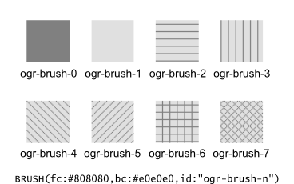
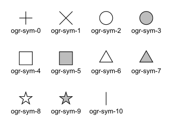

GDAL - Feature Style Specification
Version 0.016 - 2018-12-03
REVISION HISTORY
- Version 0.016 - 2018-12-03 - Andrew Sudorgin
Restored and documented font property for point symbols
- Version 0.015 - 2018-01-08 - Alan Thomas
Update outdated material; minor changes to BRUSH 'id' and LABEL 't', 'bo', 'it', 'un', 'st'; clarify BRUSH 'fc', 'bc', SYMBOL 'o' and LABEL 's', 'w', 'p'
- Version 0.014 - 2011-07-24 - Even Rouault
Mention the escaping of double-quote characters in the text string of a LABEL (ticket #3675)
- Version 0.013 - 2008-07-29 - Daniel Morissette
Added 'o:' for font point symbol outline color (ticket #2509)
- Version 0.012 - 2008-07-21 - Daniel Morissette
Added 'o:' for text outline color and updated 'b:' to be specifically
a filled label background box (ticket #2480)
- Version 0.011 - 2008-02-28 - Tamas Szekeres
Note about OGR SQL to transfer the style between the data sources
- Version 0.010 - 2006-09-23- Andrey Kiselev
Added label styles 'w', 'st', 'h', 'm:h', 'm:a', 'p:{10,11,12}'
- Version 0.009 - 2005-03-11- Frank Warmerdam
Remove reference to OGRWin, move into ogr distribution
- Version 0.008 - 2001-03-21- Frank Warmerdam
Fix minor typos (h:12pt instead of s:12pt in examples)
- Version 0.008 - 2000-07-15 - Stephane Villeneuve
Remove style table in Layer. Add forecolor and backcolor to brush.
- Version 0.007 - 2000-06-22 - Daniel Morissette
Fixed typo and added offset param for PEN.
- Version 0.006 - 2000-06-20 - Daniel Morissette
Added the OGR-Win idea and made small changes here and there.
- Version 0.005 - 2000-06-12 - Daniel Morissette
Allow passing of comma-delimited list of names in PEN's "id" parameter.
Defined system-independent pen style names.
- Version 0.004 - 2000-06-09 - Stephane Villeneuve
Added PEN cap and join parameters
More clearly defined the API
- Version 0.003 - 2000-02-15 - Daniel Morissette
First kind-of-complete version.
1. Overview
This document defines the way feature style information (i.e. colors, line
width, symbols, etc.) should be handled at the various levels in GDAL's
vector drivers (OGR).
The following GDAL vector drivers have varying levels of support
for feature styles:
DWG (libopencad),
DWG (Teigha),
DXF,
KML (libkml),
MapInfo,
MicroStation DGN v7 and
DGN v8,
OpenJUMP JML and
PDF.
1.1 Style is a property of Feature object
Conceptually, the feature style should be seen as a property of a feature.
Even though some systems store style information in a special attribute,
in GDAL it is more consistent to see the style as a property, just the same
way the geometry of a feature is also a property.
This does not prevent us from storing the style information in an attribute
when writing to some formats that have no provision for styles (e.g. E00).
But then at the time such a dataset is opened through GDAL, the name of
the attribute that contains style information should either be specified
in some metadata, or be specified by the user.
Also, in the SFCOM interface, the style information will be stored in
an attribute just like the geometry is.
1.2 Feature Styles can be stored at 2 levels
The style defines the way a feature should be drawn, but it is very common
to have several features that share the same style. In those cases, instead
of duplicating the style information on each feature, we will provide a
more efficient way to share style information.
There are two levels at which style information can be found:
-
A dataset can have a table of pre-defined styles that can then be referred
to by the layers or by the individual features. The mechanism for that is defined
further down in this document.
-
A feature (OGRFeature object) can have its own complete style definition.
Alternatively, a feature can be linked to a style in the dataset's table of styles.
This can save storage space when the same styles are reused often.
It should be possible to have style information stored at one or more of
the various levels while working on a given dataset. The level(s) where
the style is actually stored will depend on the most efficient approach
for the format we are dealing with.
1.3 Drawing Tools
We define a small set of drawing tools that are used to build style definitions:
-
PEN: For linear styles
-
BRUSH: For filling areas
-
SYMBOL: Point symbols
-
LABEL: For annotations
Each drawing tool can take a number of parameters, all optional. The style
syntax is built in a way that a system that cannot support all possible
parameters can safely skip and ignore the parameters it does not support.
This will also make it easy to extend the specification in the future without
breaking existing code or applications.
A style can use a single tool, or use a combination of one or more tools.
By combining the use of several tools in a style, one can build virtually
any type of graphical representation. For instance, the SYMBOL tool can
be used to place spaced symbols along a line. Also, the LABEL tool can
be used to place text on a point, stretch it along a line, or even, by
combining the PEN tool with the LABEL tool, use the line as a leader to
the text label, and draw the text string on the last vertex of the line.
Of course, few systems can support all that. But the intention here
is to have a style specification that is powerful and flexible enough to
allow all types of formats to exchange style information with the least
possible loss.
1.4 Feature attributes can be used by style definitions
In some cases, it might be useful for a style definition to refer to an
attribute field on the feature for a given tool parameter's value instead
of having a hardcoded value inside the style itself.
Example of this are text angle, text string, etc... these values change
for every single text label, but we can share the rest of the label style
at the layer level if we lookup the angle and text string in an attribute
on each feature.
The syntax of the style string provides a way that any parameter value
can be either a constant value, or a lookup to an attribute field.
1.5 Tool parameter units
Several parameter values can be expressed in different measurement units
depending on the file format you are dealing with. For instance, some systems
express line width, or text height in points, other in pixels, and others
use ground units. In order to accommodate all that, all parameters can be
specified in one of the following units systems:
-
g: Map Ground Units (whatever the map coordinate units are)
-
px: Pixels
-
pt: Points (1/72 inch)
-
mm: Millimeters
-
cm: Centimeters
-
in: Inches
Some tools will have to be provided at the GDAL client level to simplify
the conversion of any value from one units system to another. This would
imply that the GDAL client has to specify a map scale so that conversions
from ground units to paper/pixel units can be performed.
2. Feature Style String
As was mentioned earlier, styles definitions will usually be stored as
strings, either in a per-layer (or per-dataset) table, or directly in the
features.
2.1 Examples
Here are some example style definition strings:
- A 5 pixels wide red line:
PEN(c:#FF0000,w:5px)
- A polygon filled in blue, with a black outline:
BRUSH(fc:#0000FF);PEN(c:#000000)
- A point symbol:
SYMBOL(c:#00FF00,id:"points.sym-45,ogr-sym-7")
- A text label, taking the text string from the "text_attribute" attribute field:
LABEL(f:"Times New Roman",s:12pt,t:{text_attribute})"
Here is what a style table that contains all the above styles could look
like:
road: PEN(c:#FF0000,w:5px)
lake: BRUSH(fc:#0000FF);PEN(c:#000000)
campsite: SYMBOL(c:#00FF00,id:"points.sym-45,ogr-sym-7")
label: LABEL(f:"Times New Roman",s:12pt,t:{text_attribute})
Then individual features can refer to styles from the table above
using the "@" character followed by the style name in their style property.
For instance, a feature with its style set to "@road" would be drawn
as a red line.
2.2 Style String Syntax
Each feature object has a style property (a string):
<style_property> = "<style_def>" | "" | "@<style_name>" | "{<field_name>}"
|
-
<style_def> is defined later in this section.
- An empty style string means that the feature's style is unspecified. It
does not indicate that the feature is invisible – an invisible feature may
be indicated using a fully transparent color, like PEN(c:#00000000).
-
@<style_name> is a reference to a predefined style in the layer or
the dataset's style table. The layer's table is looked up first, and if
style_name is not found there then the dataset's table will be looked up.
-
Finally,
{<field_name>} means that the style property should be read
from the specified attribute field.
The <style_def> is the real style definition. It is a combination of
1 or more style parts separated by semicolons. Each style_part uses a drawing
tool to define a portion of the complete graphical representation:
<style_def> = <style_part>[;<style_part>[;...]]
<style_part> = <tool_name>([<tool_param>[,<tool_param>[,...]]])
<tool_name> = name of a drawing tool, for now: PEN | BRUSH | SYMBOL | LABEL
<tool_param> = <param_name>:<param_value>
<param_name> = see list of parameters names for each drawing tool
<param_value> = <value> | <value><units>
<value> = "<string_value>" | <numeric_value> | {<field_name>}
<units> = g | px | pt | mm | cm | in
|
By default, style parts are drawn in the order that they appear in the
style_def string unless each part is assigned a different level parameter
value (see the level parameter definition).
All drawing tool parameters are optional. So it is legal to have a style_part
with an empty drawing tool parameter list (e.g. "PEN()"). For each parameter
that does not have any specified value, it is up to the client application
to use its own default value. This document provides advisory default values
for most parameters, but it is not mandatory for an application to use
those default values.
When {<field_name>} is used for a tool_param value, several options
are available with respect to the units. The units can be specified after
the field name as in PEN(c:#FF0000,w:{line_width}pt) or can be left unspecified
as in PEN(c:#FF0000,w:{line_width}). In the first case, the default units
will be points (pt), but if the attribute field line_width contains a value
followed by a units abbreviation (e.g. "5px") then the units specified
in the attribute fields have precedence (in this case pixels). Note that
the attribute field does not have to contain a units value and probably
won't in most cases; it is just an optional feature to be able to override
the default units from inside an attribute field's value.
2.3 Pen Tool Parameters
Applicable geometry types:
-
Point: When applied to a point, a PEN tool can only define the color and
the size of the point to draw.
-
Polyline: This is the most obvious case.
-
Polygon: Defines the way the outline of a polygon should be drawn.
Here is the current list of PEN tool parameters. While this is sufficient
to cover all the cases that we have encountered so far, new parameters
might be added in the future to handle new types of graphical representation.
Note again that all parameters are optional:
| param_name |
Description |
| c |
Pen Color, expressed in hexadecimal (#RRGGBB[AA])
[AA] the last 2 digits define the alpha channel value, with 0 being transparent and FF being opaque. The default is FF (opaque)
Suggested default: black (c:#000000)
Example: PEN(c:#FF0000), or PEN(C:#FF0000FF) |
| w |
Pen Width, expressed as a numeric value with units (g, px, pt, mm, cm, in)
Suggested default: 1 pixel
Examples: PEN(c:#FF0000,w:5px), PEN(w:3pt), PEN(w:50g) |
| p |
Pattern - To create dash lines. A list of pen-down/pen-up distances
Examples:
 = PEN(c:#FF0000,w:2px,p:"4px
5px") - short-dash line = PEN(c:#FF0000,w:2px,p:"4px
5px") - short-dash line
 = PEN(c:#FF0000,w:2px,p:"10px
5px") - long-dash line = PEN(c:#FF0000,w:2px,p:"10px
5px") - long-dash line
 = PEN(c:#FF0000,w:2px,p:"10px
5px 4px 5px") - long/short dash line = PEN(c:#FF0000,w:2px,p:"10px
5px 4px 5px") - long/short dash line |
| id |
Comma-delimited list of Pen Names or Ids - For systems that
identify pens with a name or an id. The names in the comma-delimited list
of ids are scanned until one is recognized by the target system.
Pen Ids can be either system-specific ids (see further below) or be one
of the pre-defined OGR pen ids for well known line patterns. The id
parameter should always include one of the OGR ids at the end of the
comma-delimited list of ids so that an application never has to rely on
understanding system-specific ids.
Here is the current list of OGR pen ids (this could grow over time):
- ogr-pen-0: solid (the default when no id is provided)
- ogr-pen-1: null pen (invisible)
- ogr-pen-2: dash
- ogr-pen-3: short-dash
- ogr-pen-4: long-dash
- ogr-pen-5: dot line
- ogr-pen-6: dash-dot line
- ogr-pen-7: dash-dot-dot line
- ogr-pen-8: alternate-line (sets every other pixel)
System-specific ids are very
likely to be meaningful only to that specific system that created them.
The ids should start with the system's name, followed by a dash (-),
followed by whatever information is meaningful to that system (a number,
a name, a filename, etc.).
e.g. "mapinfo-5", or "mysoft-lines.sym-123", or "othersystems-funnyline"
System-specific ids are allowed in order to prevent loss of information when
dealing with data from systems that store line patterns in external files
or that have their own pre-defined set of line styles (for instance, to do a MapInfo MIF
to TAB translation without any loss.)
Examples:
PEN(c:#00FF00,id:"ogr-pen-0") - simple solid line
PEN(c:#00FF00,id:"mapinfo-5,ogr-pen-7") - corresponds to MapInfo's Pen #5, and a system that can't understand MapInfo pens falls back on the default "ogr-pen-7" pen (dot-dot line).
|
| cap |
Pen Cap - Set the shape of end points of lines.
"cap:b" - Butt: The ends of the line don't extend beyond the end points. This is the default.
"cap:r" - Round: Terminate lines with a circle whose diameter is equal to the line width.
"cap:p" - Projecting: Similar to Butt, but the ends of the line extend by half of line width beyond the end points. |
| j |
Pen Join - Set the shape of the join point (vertex) of lines.
"j:m" - Miter: Extend the outer edge of the lines until they touch. This is the default.
"j:r" - Rounded: Join lines with an arc whose center is at the join point and whose diameter is equal to the line width.
"j:b" - Bevel: Join the lines with butt end caps and fill the resulting triangular notch at the join position. |
| dp |
Perpendicular Offset, expressed as a numeric value with units (g, px, pt, mm, cm, in)
Offset from the line center. If the offset is negative then the pen will be
drawn left of the main segment and right otherwise.
|
| l |
Priority Level - Numeric value defining the order in which style
parts should be drawn. Lower priority style parts are drawn first, and
higher priority ones are drawn on top.
If priority level is unspecified, the default is 1. |
2.4 Brush Tool Parameters
Applicable geometry types:
-
Point: Not applicable.
-
Polyline: Not applicable.
-
Polygon: Defines the way the surface of a polygon is filled.
Here is the current list of BRUSH tool parameters. Note again that that
this list may be extended in the future, and all parameters are optional:
| param_name |
Description |
| fc |
Brush ForeColor, expressed in hexadecimal (#RRGGBB[AA]). Used for painting the brush pattern itself.
[AA] the last 2 digits define the alpha channel value, with 0 being transparent and FF being opaque. The default for [AA] is FF (opaque).
Suggested default: 50% grey (c:#808080)
Example: BRUSH(fc:#FF0000)
|
| bc |
Brush BackColor, expressed in hexadecimal (#RRGGBB[AA]). Used for painting the area behind the brush pattern.
[AA] the last 2 digits define the alpha channel value, with 0 being transparent and FF being opaque. The default for [AA] is FF (opaque)
Suggested default: transparent (c:#FFFFFF00)
Example: BRUSH(fc:#FF0000,bc:#FFEEDD)
|
| id |
Brush Name or Brush Id - Comma-delimited list of brush names or ids. The names in the comma-delimited list
of ids are scanned until one is recognized by the target system.
Brush Ids can be either system-specific ids (see further below) or be one
of the pre-defined OGR brush ids for well known brush patterns. The id
parameter should always include one of the OGR ids at the end of the
comma-delimited list of ids so that an application never has to rely on
understanding system-specific ids.

Here is the current list of OGR brush ids (this could grow over time):
- ogr-brush-0: solid foreground color (the default when no id is provided)
- ogr-brush-1: null brush (transparent - no fill, irrespective of fc or bc values)
- ogr-brush-2: horizontal hatch
- ogr-brush-3: vertical hatch
- ogr-brush-4: top-left to bottom-right diagonal hatch
- ogr-brush-5: bottom-left to top-right diagonal hatch
- ogr-brush-6: cross hatch
- ogr-brush-7: diagonal cross hatch
Like with Pen Ids, system-specific brush ids are very
likely to be meaningful only to that specific system that created them.
The ids should start with the system's name, followed by a dash (-),
followed by whatever information is meaningful to that system (a number,
a name, a filename, etc.).
The following conventions will be used for common system-specific brush ids:
- "bmp-filename.bmp" for Windows BMP patterns
Other conventions may be added in the future (such as vector symbols, WMF, etc).
|
| a |
Angle - Rotation angle (in degrees, counterclockwise) to apply
to the brush pattern. |
| s |
Size or Scaling Factor - Numeric value with or without units.
If units are specified, then this value is the absolute size to draw
the brush or symbol.
If no units are specified then it is taken as a scaling factor relative
to the symbol's default size. |
| dx, dy |
Spacing, expressed as a numeric value with units (g, px, pt, mm, cm, in)
If filling an area using point symbols, these values
will define the spacing to use between them. "dx" is the horizontal distance
between the center of two adjacent symbols and "dy" is the vertical distance.
The default is to use the symbol's bounding box width and height for dx
and dy respectively. |
| l |
Priority Level - Numeric value defining the order in which style
parts should be drawn. Lower priority style parts are drawn first, and
higher priority ones are drawn on top.
If priority level is unspecified, the default is 1. |
2.5 Symbol Tool Parameters
Applicable geometry types:
-
Point: Place a symbol at the point's location
-
Polyline: Place symbols along the polyline, either at each vertex, or equally
spaced.
-
Polygon: Place the symbols on the outline of the polygon.
Here is the current list of SYMBOL tool parameters. Note again that that
this list may be extended in the future, and all parameters are optional:
| param_name |
Description |
| id |
Symbol Name or Id - Comma-delimited list of symbol names or ids. The names in the comma-delimited list
of ids are scanned until one is recognized by the target system.
Symbol Ids can be either system-specific ids (see further below) or be one
of the pre-defined OGR symbol ids for well known symbols. The id
parameter should always include one of the OGR ids at the end of the
comma-delimited list of ids so that an application never has to rely on
understanding system-specific ids.

Here is the current list of OGR symbol ids (this could grow over time):
- ogr-sym-0: cross (+)
- ogr-sym-1: diagcross (X)
- ogr-sym-2: circle (not filled)
- ogr-sym-3: circle (filled)
- ogr-sym-4: square (not filled)
- ogr-sym-5: square (filled)
- ogr-sym-6: triangle (not filled)
- ogr-sym-7: triangle (filled)
- ogr-sym-8: star (not filled)
- ogr-sym-9: star (filled)
- ogr-sym-10: vertical bar (can be rotated using angle attribute to produce diag bar)
Like with Pen Ids, system-specific symbol ids are very
likely to be meaningful only to that specific system that created them.
The ids should start with the system's name, followed by a dash (-),
followed by whatever information is meaningful to that system (a number,
a name, a filename, etc.).
The following conventions will be used for common system-specific symbol ids:
- "bmp-filename.bmp" for Windows BMP symbols
- "font-sym-%d" for a font symbols,
where %d is a glyph number inside a font,
font family is defined by f style field.
Other conventions may be added in the future (such as vector symbols, WMF, etc).
|
| a |
Angle - Rotation angle (in degrees, counterclockwise) to apply
to the symbol. |
| c |
Symbol Color, expressed in hexadecimal (#RRGGBB[AA])
[AA] the last 2 digits define the alpha channel value, with 0 being transparent and FF being opaque. The default for [AA] is FF (opaque)
Suggested default symbol color: black (c:#000000)
Example: SYMBOL(c:#FF0000)
|
| o |
Symbol Outline Color, expressed in hexadecimal (#RRGGBB[AA]).
If this parameter is set, an additional halo or border of this color is drawn around the symbol.
|
| s |
Size or Scaling Factor - Numeric value with or without units.
If units are specified, then this value is the absolute size to draw
the symbol.
If no units are specified then it is taken as a scaling factor relative
to the symbol's default size. |
| dx, dy |
X and Y offset of the symbol's insertion point, expressed as a
numeric value with units (g, px, pt, mm, cm, in)
Applies to point geometries, and to symbols placed at each vertex of
a polyline. |
| ds, dp, di |
Spacing parameters for symbols spaced along a line, expressed as a
numeric value with units (g, px, pt, mm, cm, in).
"ds" is the step to use when placing symbols along the line.
By default, symbols applied to a feature with a line geometry are placed
at each vertex, but setting "ds" triggers the placement of symbols at an
equal distance along the line. "ds" has no effect for a feature with a
point geometry.
"dp" can be used together with "ds" to specify the perpendicular distance
between the symbols' center and the line along which they're placed.
Finally, "di" can be used to specify an initial offset from the beginning
of the line.
Example:
SYMBOL(id:123, s:5, di:5px, ds:50px) |
| l |
Priority Level - Numeric value defining the order in which style
parts should be drawn. Lower priority style parts are drawn first, and
higher priority ones are drawn on top.
If priority level is unspecified, the default is 1. |
| f |
Font Name -
Comma-delimited list of fonts names. Works like the CSS font-family
property: the list of font names is scanned until a known font name is encountered.
Example: SYMBOL(c:#00FF00,s:12pt,id:"font-sym-75,ogr-sym-9",f:"MapInfo_Cartographic")
|
2.6 Label Tool Parameters
Applicable geometry types:
-
Point: Place a text label at the point's location
-
Polyline: Place text along the polyline.
-
Polygon: Place a label at the centroid of the polygon. All parameters behave
exactly as if the geometry was a point located at the polygon's centroid.
Here is the current list of LABEL tool parameters. Note again that that
this list may be extended in the future, and all parameters are optional:
| param_name |
Description |
| f |
Font Name -
Comma-delimited list of fonts names. Works like the CSS font-family
property: the list of font names is scanned until a known font name is encountered.
Example: LABEL(f:"Noto Sans, Helvetica", s:12pt, t:"Hello World!")
|
| s |
Font Size, expressed as a numeric value with units (g, px, pt, mm, cm, in).
In the CAD world, font size, or "text height", determines
the height of a capital letter – what typographers call "cap height".
But in the worlds of typesetting, graphics and cartography, font size
refers to the "em height" of the font, which is taller than the cap height.
This means that text assigned a height of 1 inch in a DXF file will look larger
(often about 45% larger) than 72-point text in a PDF file or
MapInfo map. At present, GDAL vector drivers treat the "s:" style string value as
whichever font size measurement (cap height or em height) is used natively by
that format, which may result in incorrect text sizing when using the ogr2ogr tool.
This parameter could be subject to clearer
specification in the future. |
| t |
Text String - Can be a constant string, or a reference to an
attribute field's value. If a double-quote character or backslash (\) character
is present in the string, it is escaped with a backslash character before it.
Examples:
LABEL(f:"Arial, Helvetica", s:12pt, t:"Hello World!")
LABEL(f:"Arial, Helvetica", s:12pt, t:"Hello World with escaped \"quotes\" and \\backslash!")
LABEL(f:"Arial, Helvetica", s:12pt, t:{text_attribute}) |
| a |
Angle - Rotation angle (in degrees, counterclockwise). |
| c |
Text Foreground Color, expressed in hexadecimal (#RRGGBB[AA])
Suggested default: black (c:#000000) |
| b |
Text Background Color - Color of the filled box to draw behind the label,
expressed in hexadecimal (#RRGGBB[AA]). No box drawn if not set. |
| o |
Text Outline Color - Color of the text outline (halo in MapInfo terminology),
expressed in hexadecimal (#RRGGBB[AA]). No outline if not set. |
| h |
Shadow Color - Color of the text shadow, expressed in hexadecimal (#RRGGBB[AA]).
No shadow if not set. |
| w |
Stretch - The stretch factor changes the width of all
characters in the font by the given percentage. For example, a setting
of 150 results in all characters in the font being stretched to 150%
of their usual width. The default stretch factor is 100. |
| m |
Label Placement Mode - How the text is drawn relative to the
feature's geometry.
"m:p" - The default. A simple label is attached to a point or to the first
vertex of a polyline.
"m:l" - Text is attached to the last vertex of a polyline. A PEN tool
can be combined with this LABEL tool to draw the polyline as a leader to
the label.
"m:s" - Stretch the text string along a polyline, with an equal spacing
between each character.
"m:m" - Place text as a single label at the middle of a polyline (based
on total line length).
"m:w" - One word per line segment in a polyline.
"m:h" - Every word of text attached to polyline is placed horizontally
in its segment, anchor point is a center of segment.
"m:a" - Every word of text attached to polyline is stretched to fit
the segment of polyline and placed along that segment. The anchor point is
a start of a segment.
|
| p |
 Anchor Position - A value from 1 to 12 defining the
label's position relative to the point to which it is
attached. There are four vertical alignment modes:
baseline, center, top and bottom;
and three horizontal modes: left, center and
right. The scheme is shown at right.
Anchor Position - A value from 1 to 12 defining the
label's position relative to the point to which it is
attached. There are four vertical alignment modes:
baseline, center, top and bottom;
and three horizontal modes: left, center and
right. The scheme is shown at right.
Currently, the precise interpretation of these values (for example,
whether accents on uppercase letters sit above or below the alignment point with p:7)
differs from file format to file format. This parameter could be subject to clearer
specification in the future.
|
| dx, dy |
X and Y offset of the label's insertion point, expressed as a
numeric value with units (g, px, pt, mm, cm, in).
Applies to text placed on a point, or at each vertex of a polyline. |
| dp |
Perpendicular Offset for labels placed along a line, expressed as
a numeric value with units (g, px, pt, mm, cm, in).
"dp" specifies the perpendicular distance between the label and the
line along which it is placed. If the offset is negative then the label will be shifted
left of the main segment, and right otherwise. |
| bo |
Bold - Set to 1 for bold text. Set to 0 or omitted otherwise. |
| it |
Italic - Set to 1 for italic text. Set to 0 or omitted otherwise. |
| un |
Underline - Set to 1 for underlined text. Set to 0 or omitted
otherwise. |
| st |
Strikethrough - Set to 1 for struck-through text. Set to 0
or omitted otherwise. |
| l |
Priority Level - Numeric value defining the order in which style
parts should be drawn. Lower priority style parts are drawn first, and
higher priority ones are drawn on top.
If priority level is unspecified, the default is 1. |
2.7 Styles Table Format
For file formats that support tables of styles, then the predefined styles
would be stored in that format.
For file formats that do not support tables of styles, then the style table
could be stored in a text file with a .ofs (OGR Feature Styles) extension
and the same basename as the dataset.
This would apply to formats like Esri Shapefile.
Here is an example of a .ofs file:
#OFS-Version: 1.0
#StyleField: "style"
DefaultStyle: PEN(c:#000000)
road: PEN(c:#FF0000,w:5px)
lake: BRUSH(fc:#0000FF);PEN(c:#000000)
campsite: SYMBOL(c:#00FF00,id:"points.sym-45,ogr-sym-7")
label: LABEL(f:"Times New Roman",s:12pt,t:{text_attribute})
The first line is a signature with a version number, which must be present.
The second line (StyleField: "style") is the name of the attribute
field in which the Feature Style String is stored for each object in the corresponding layer. This is optional, if not set, then the objects in the layer will all share the same style defined in DefaultStyle.
The third line (DefaultStyle:...) defines the style that applies by
default to all objects that have no explicit style.
Then the list of style definitions follow.
2.8 Using OGR SQL to transfer the style between the data sources
You can use the OGR_STYLE special field to extract the feature level style,
and ogr2ogr can be used to transfer the style string between data sources according
to the following example:
ogr2ogr -f "ESRI Shapefile" -sql "select *, OGR_STYLE from rivers" rivers.shp rivers.tab
Without specifying the length of the style field, the output driver may truncate
the length to a default value. Therefore it may be necessary to specify the target
length manually, like:
ogr2ogr -f "ESRI Shapefile" -sql "select *, CAST(OGR_STYLE AS character(255)) from rivers" rivers.shp rivers.tab
OGR is aware of using the OGR_STYLE field if it exists, and OGRFeature::GetStyleString
will return the value of this field if no style string has been specified programmatically.
3. OGR Support Classes
The OGRFeature class has
member functions GetStyleString, SetStyleString and
SetStyleStringDirectly which may be used to interact with a
feature's style string as a C-style string. Additionally, there are
GetStyleTable, SetStyleTable and
SetStyleTableDirectly for managing style tables as instances of the
OGRStyleTable class.
The OGRLayer class and
GDALDataset class also
have GetStyleTable, SetStyleTable and
SetStyleTableDirectly member functions.
To parse style strings, the
OGRStyleMgr class is used.
Each style tool in the string is accessed as an instance of the
OGRStyleTool class. Lastly,
four helper classes exist, one for each tool
(OGRStylePen,
OGRStyleBrush,
OGRStyleSymbol,
OGRStyleLabel),
with each available parameter represented by a getter and setter member function. To
understand these classes better, it may be useful to read the
ogr_featurestyle.h and
ogrfeaturestyle.cpp
code files.
Here is some example C++ code:
OGRStyleTable oStyleTable;
OGRStyleMgr *poStyleMgr = new OGRStyleMgr(&oStyleTable);
// Create a new style in the style table by specifying the whole style string
if (poStyleMgr->AddStyle("@Name","PEN(c:#123456;w:10px);BRUSH(c:#345678)"))
{
poStyleMgr->SetFeatureStyleString(poFeature,"@Name",TRUE)
// or
poStyleMgr->SetFeatureStyleString(poFeature,"PEN(c:#123456,w:10px);BRUSH(c:#345678)",FALSE)
}
oStyleTable->SaveStyleTable("ttt.tbl");
// Create a new style in the style table by specifying each tool (part) as a string
poStyleMgr->InitStyleString();
poStyleMgr->AddPart("PEN(c:#123456,w:10px)");
poStyleMgr->AddPart("BRUSH(c:345678)");
poStyleMgr->AddStyle("@Name");
poStyleMgr->SetFeatureStyleString(poFeature,"@Name",TRUE);
oStyleTable->SaveStyleTable("ttt.tbl");
// Create a new style in the style table using the style tool helper classes
OGRStyleTool *poStylePen = new OGRStylePen;
poStylePen->SetColor("#123456");
poStylePen->SetUnit(OGRSTUPixel);
poStylePen->SetWidth(10.0);
poStyleMgr->AddPart(poStylePen);
delete poStylePen;
// Reading a style
OGRStyleTool *poStyleTool;
poStyleMgr->GetStyleString(poFeature);
for (int iPart = 0; iPart < poStyleMgr->GetPartCount(); iPart++)
{
poStyleTool = GetPart(iPart);
switch (poStyleTool->GetType())
{
case OGRSTCPen:
poStylePen = (OGRStylePen *)poStyleTool;
pszColor = poStylePen->Color(bDefault);
if (bDefault == FALSE)
poStylePen->GetRGBFromString(pszColor, nRed, nGreen,
nBlue, nTrans);
else
// Color not defined
dfWidth = poStylePen->Width(bDefault);
if (bDefault == FALSE)
// Use dfWidth
else
// dfWidth not defined
:
:
}
}